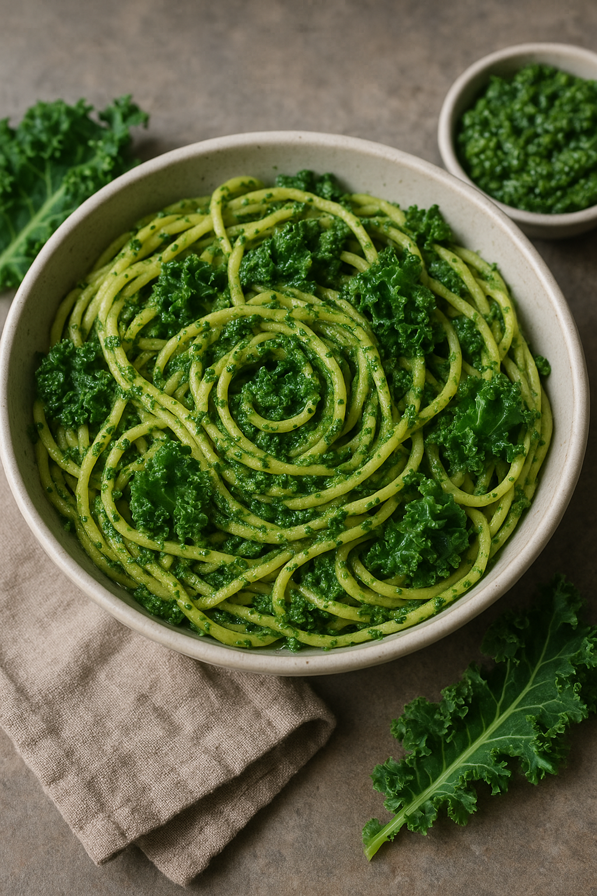

Om Rätten

Hur fan gör man det här då?
- Koka pastan i saltat vatten
- Repa bladen från grönkolsstammen. Skala vitlöken
- Mixa samman grönkålsblad, vitlök och solroskärnor i en matberedare. Tillsätt oljan och mixa samman snabbt och försiktigt. Smaka av peston med rivet citronskal, citronsaft, salt och peppar.
- Riv grillosten grovt på ett rivjärn och stek den krispig i olja i en varm stekpanna. Rör om med jämna mellanrum med en trägaffel så att osten fördelar sig smått i pannan.
- Sila av pastavattnet men spara 0,5 dl vatten kvar i kastrullen. Blanda ner peston och vänd samman ordentligt med pastan.
- Lägg upp pastan på tallrikar och toppa med den stekta grillosten.
- klar klar klar